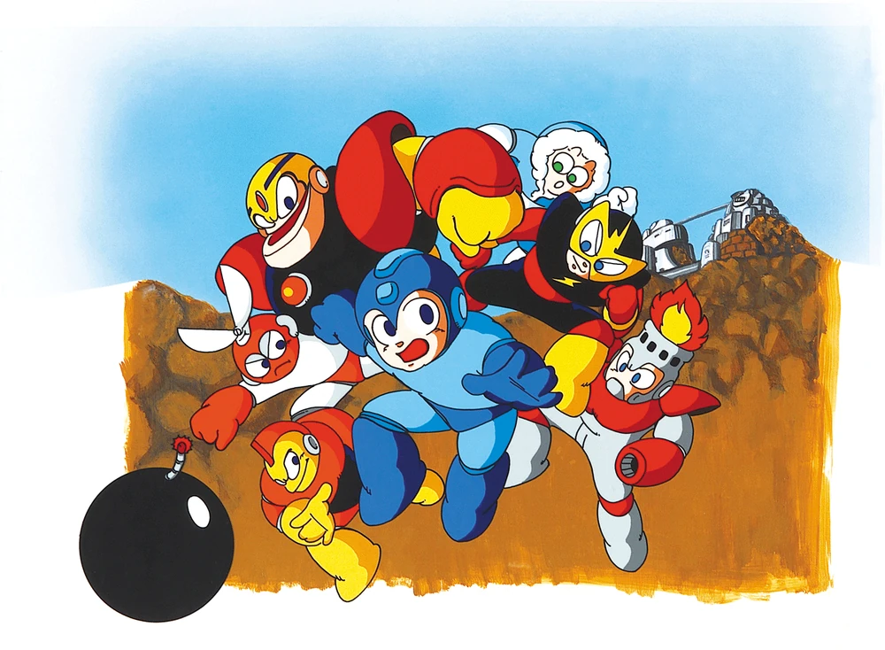
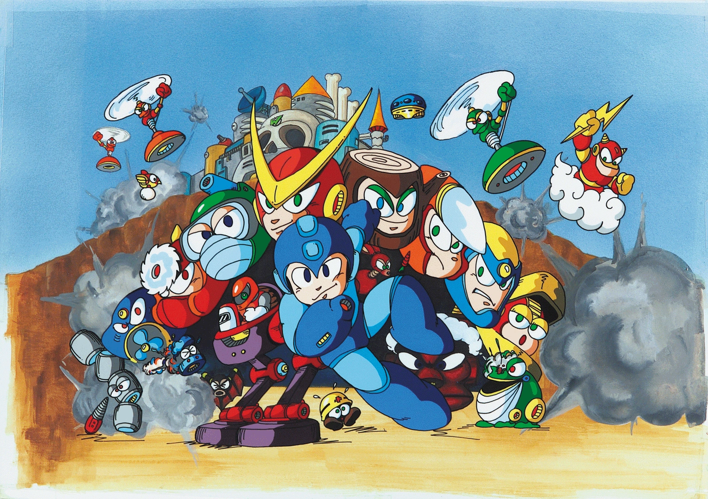
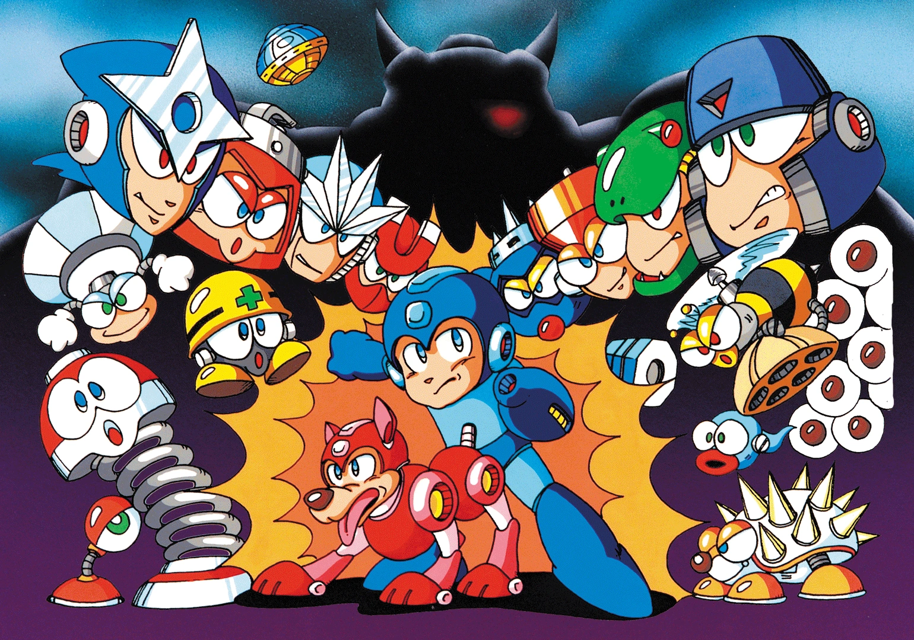
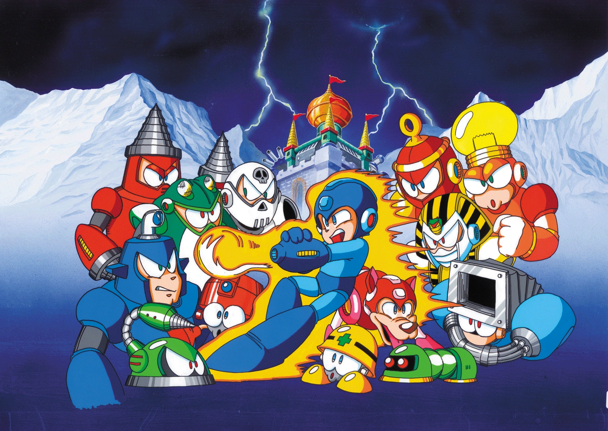
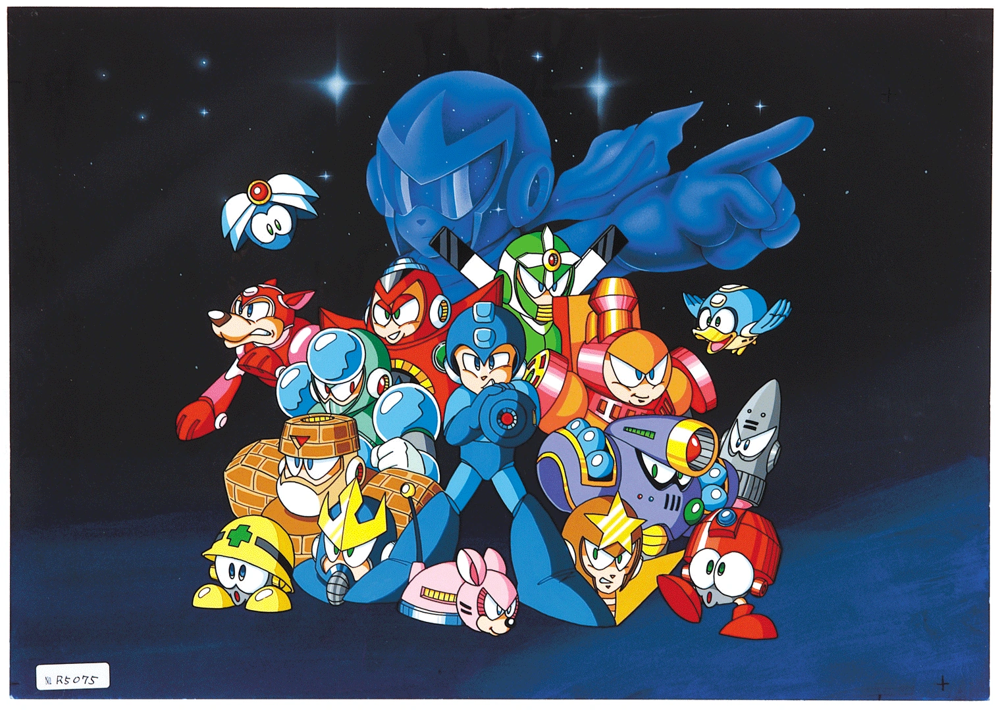

The Mega Man series, beginning in 1987, follows the adventures of the Blue Bomber, a humanoid robot created by Dr. Light to battle the evil
Dr. Wily and his army of Robot Masters. Across dozens of games spanning multiple sub-series—including the classic Mega Man, Mega Man X, Mega Man Zero,
Mega Man Battle Network, and Mega Man Legends—the franchise blends action-platforming, strategic boss battles, and unique weapon-collection mechanics.
Core gameplay revolves around defeating bosses to gain their special weapons, navigating precise platforming stages, and adapting to increasingly challenging
enemy patterns. Over time, the series introduced new abilities, companions like Rush and Beat, and variations in style, from side-scrolling action to RPG
elements and 3D adventure. With its colorful visuals, memorable music, and iconic gameplay, Mega Man has become one of gaming’s most enduring and influential
franchises, inspiring countless sequels, spin-offs, and remakes.
Mega Man

Mega Man (1987) is the first game in the series, introducing the Blue Bomber’s fight against Dr. Wily and the original six Robot Masters.
Players can choose any stage from the start, and each boss defeated grants a unique weapon that works better against others.
The gameplay is simple but tough—focused entirely on precise jumping and shooting—and it established the classic style, music,
and challenge the Mega Man series became known for.
Mega Man II

Mega Man 2 (1988): The sequel expands the series with eight new Robot Masters and introduces the iconic Metal Blade weapon. It’s more polished and balanced than the first, with new music, tighter controls, and the introduction of the Energy Tank system to recover health, making it one of the most beloved entries.
Mega Man III

Mega Man 3 (1990): Adds sliding and the helpful robotic dog, Rush, giving Mega Man more mobility. Eight Robot Masters return, along with the ability to combine powers with Rush’s modules. It’s known for its challenging stages and memorable soundtrack.
Mega Man IV

Mega Man 4 (1991): Introduces the Charge Shot, allowing more strategic attacks. Dr. Cossack joins the story, and the game keeps the classic eight-boss structure while raising the difficulty and variety of stages.
Mega Man V

Mega Man 5 (1992): Features the new Beat companion, a bird that helps attack enemies, and eight more Robot Masters. The game continues the classic formula with improved graphics and music while keeping the tough platforming fans expect.
Mega Man VI
Mega Man 6 (1993): The final NES entry adds the collectible “Vehicle Modules,” allowing new ways to traverse levels. Eight Robot Masters, solid platforming, and a strong soundtrack make it a fitting conclusion to the NES era.